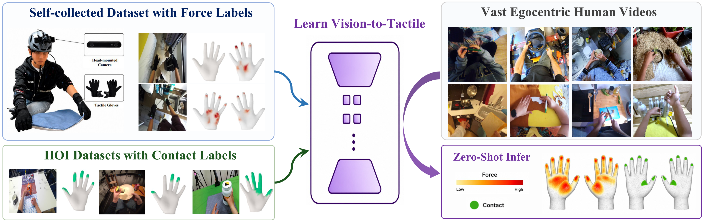
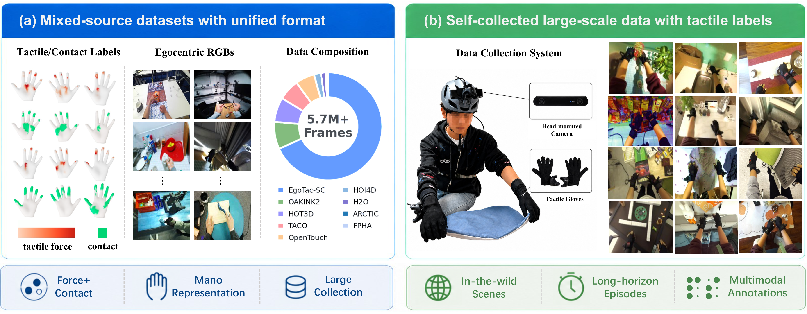
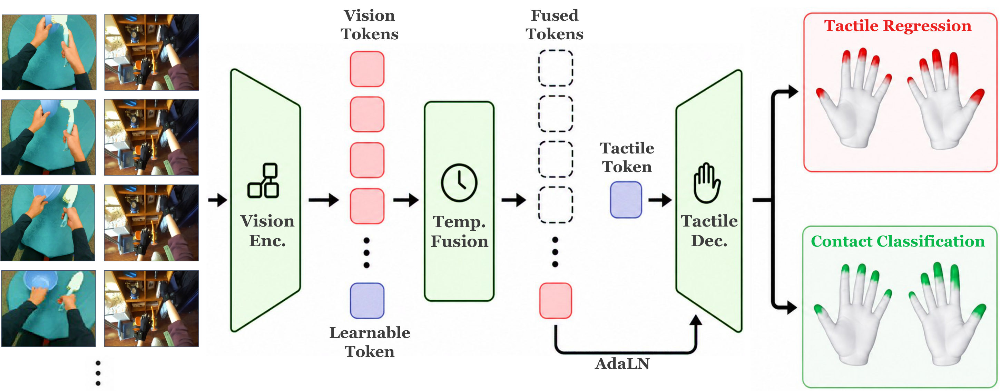
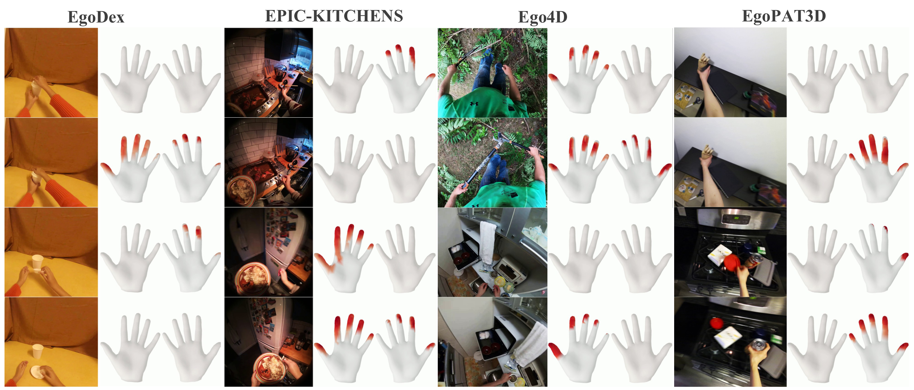
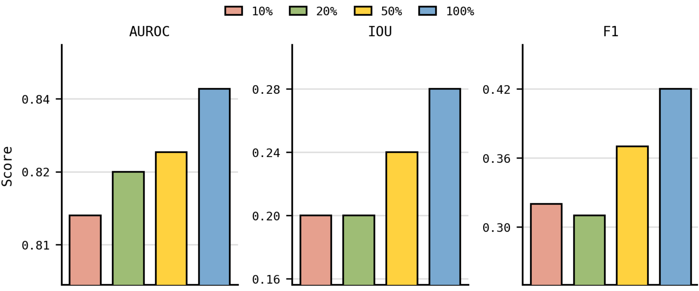

NeurIPS 2026 · Poster
EgoTac: In-the-wild Tactile Prediction from Egocentric Vision
1 Shanghai Qi Zhi Institute 2 Shanghai Jiao Tong University 3 Tsinghua University 4 Fudan University
† Corresponding author
A visual pathway to touch: predicting force and contact on both hands from first-person video.

Abstract
Touch is essential to dexterous manipulation, but the egocentric human videos widely used for robot learning rarely include tactile measurements. EgoTac predicts dense tactile information directly from egocentric video. It is trained on more than 5.7 million image–tactile pairs that combine continuous force measurements with binary contact labels. The model achieves an average in-domain force error below 0.06 N, improves over a prior contact estimator on out-of-domain benchmarks, and produces zero-shot predictions on unconstrained videos.
EgoTac dataset
We bring together a self-collected dataset with measured tactile force and hand–object interaction datasets with contact supervision. Both are mapped to the MANO hand surface, giving the model a common representation across data sources.

Method
EgoTac encodes a short sequence of egocentric frames, fuses information over time, and decodes a tactile state for both hands. Its outputs include continuous force and binary contact on the hand surface.

Results
On force-labeled in-domain data, EgoTac reaches an average force error below 0.06 N. On out-of-domain contact benchmarks, it outperforms the contact estimation baseline. The same model can also infer touch in uninstrumented daily-life videos.
Zero-shot predictions

In-the-wild video examples
The same model predicts touch across distinct everyday settings, without tactile sensors at test time. Each clip pairs the egocentric view with its tactile prediction.
EgoDex
2 sequencesEPIC-KITCHENS
2 sequencesEgo4D
2 sequencesMore everyday scenes
2 sequencesScaling with data
Using more training data improves contact prediction across AUROC, IoU, and F1.

Citation
If you use EgoTac in your research, please cite the paper.
@misc{zhang2026egotacinthewildtactileprediction,
title={EgoTac: In-the-wild Tactile Prediction from Egocentric Vision},
author={Wenkang Zhang and Chengbo Yuan and Zicheng Zhang and Zhengxue Cheng and Yang Gao},
year={2026},
eprint={2608.15060},
archivePrefix={arXiv},
primaryClass={cs.CV},
url={https://arxiv.org/abs/2608.15060}
}